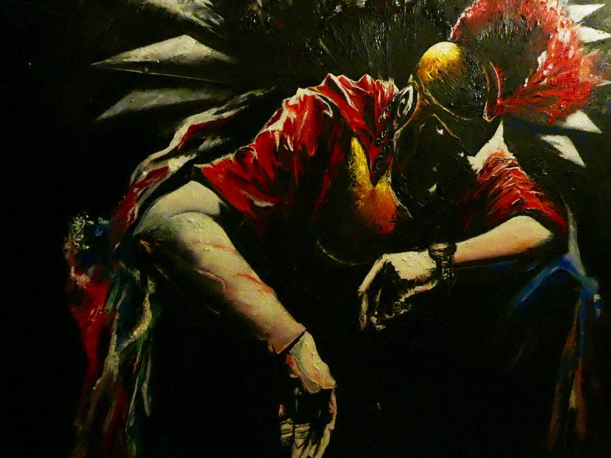
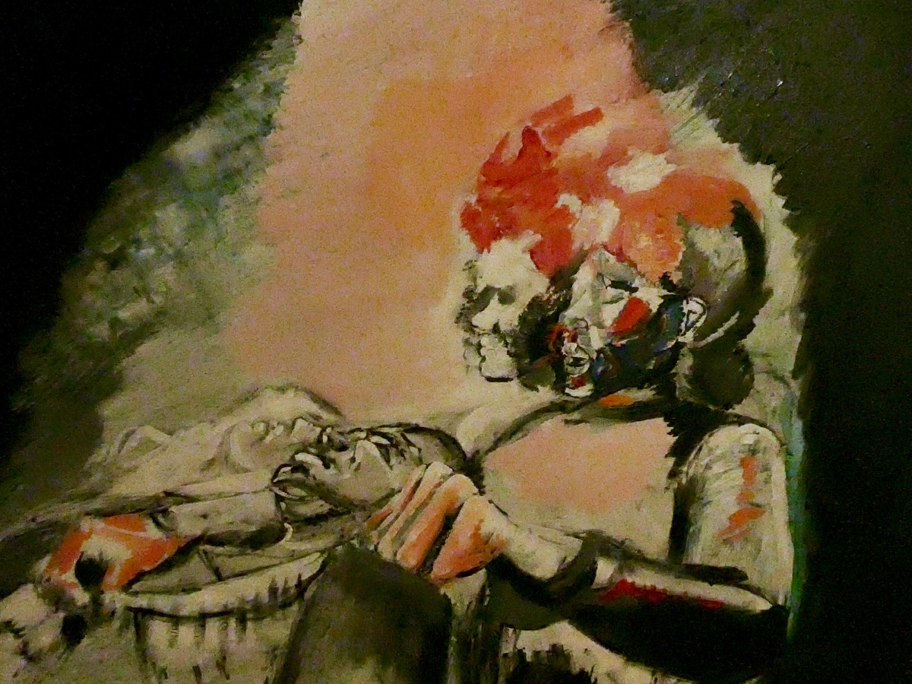

Trojan in the Trap

A Close Shave

The artist, Krishna Das, currently resides in Southern California and is now in his third year at Santa Monica College. A childhood spent immersed in the fine arts and literature fueled not only a need to realize his creative potential but also to employ his skills in the service of altruistic relief efforts worldwide. In 2014, Krishna co-authored and illustrated an original children's book that was later turned into a musical featured through UCR's model theatre department. As of now, the artist is creating a series of works in the style of Puerto Rican & Texas fine artists, illustrating the beauty and resilience of impacted residents in both areas. Mr. Das plans on showcasing at the Beverly Hills Art Show, The Chelsea International F.A. Competition, and establishing exhibits this year at nonprofit galleries in Santa Monica.
CONTACT
krishd2015@gmail.com
@KrishOrNah
@KrishOrNah